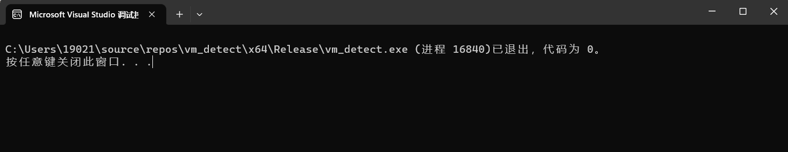
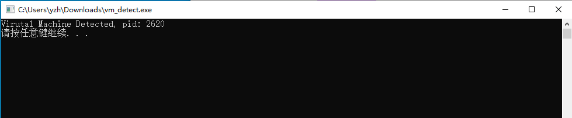

枚举系统进程检测虚拟机环境
在样本分析的工作中遇到了一个样本，该样本通过枚举系统进程来实现反虚拟机的目的，这里简单记录一下。
原理
因为虚拟机一般都安装了vmtools的，而在虚拟机环境中vmtools对应的进程会在后台运行，该进程对应的可执行文件名称为"vmtoolsd.exe"，所以恶意代码可以通过调用一些API来枚举系统内的所有进程，然后查找是否有vmtools的进程在运行，从而检测当前是否运行在虚拟机环境。
需要使用到的API：
- CreateToolhelp32Snapshot(): 创建指定进程以及这些进程使用的堆、模块和线程的快照。
- Process32First(): 返回有对应系统快照中遇到的第一个进程的信息。
- Process32Next(): 和Process32First()功能一样，不过能够用于循环枚举。
借助上面这几个API，其实就很容易通过枚举系统进程来实现反虚拟机，实际上，如果运行权限够高的话，还能够关闭某些进程。
函数原型：
1
2
3
4
| HANDLE CreateToolhelp32Snapshot(
[in] DWORD dwFlags,
[in] DWORD th32ProcessID
);
|
参数：
dwFlags：用以指定包含在快照中的范围
th32ProcessID：用以指定某个需要被包含在快照中的进程
我们这里将dwFlags的取值设置为 TH32CS_SNAPPROCESS(0X2)，即系统内所有的进程都包含在创建的快照中。
对于第二个参数，其实就不用管，因为 th32ProcessID 只有当 dwFlags 的取值为 { TH32CS_SNAPHEAPLIST**, TH32CS_SNAPMODULE, **TH32CS_SNAPMODULE32, TH32CS_SNAPALL} 中的一个时才有效，其他情况下，这个参数都会被忽略。
Process32First&Next()
函数原型：
1
2
3
4
5
6
7
8
| BOOL Process32First(
[in] HANDLE hSnapshot,
[in, out] LPPROCESSENTRY32 lppe
);
BOOL Process32Next(
[in] HANDLE hSnapshot,
[out] LPPROCESSENTRY32 lppe
);
|
参数：
hSnapshot：使用CreateToolhelp32Snapshot()创建的快照的句柄
lppe：指向 PROCESSENTRY32 结构类型的指针
返回值：
如果成功，则将对应进程的相关信息复制到lppe 指针指向的PROCESSENTRY32结构体变量中，并返回true，否则返回false。
PROCESSENTRY32
1
2
3
4
5
6
7
8
9
10
11
12
| typedef struct tagPROCESSENTRY32 {
DWORD dwSize;
DWORD cntUsage;
DWORD th32ProcessID;
ULONG_PTR th32DefaultHeapID;
DWORD th32ModuleID;
DWORD cntThreads;
DWORD th32ParentProcessID;
LONG pcPriClassBase;
DWORD dwFlags;
CHAR szExeFile[MAX_PATH];
} PROCESSENTRY32;
|
注意： dwSize 参数，这个参数表示这个结构体的大小，在调用Process32First()之前, 需要将这个参数设置为sizeof(PROCESSENTRY32)，否则如果不初始化这个参数，Process32First()的调用将会失败.
这里我们比较关系的成员其实就是szExeFile，这个成员就是进程对应的可执行文件名称。
实例
下面我们将检查系统内所有进程对应的可执行文件的名称来实现虚拟机环境检测。
源码如下：
1
2
3
4
5
6
7
8
9
10
11
12
13
14
15
16
17
18
19
20
21
22
23
24
25
26
27
28
29
30
31
32
33
34
35
36
37
38
39
40
41
42
43
44
45
46
47
48
| #include <iostream>
#include <Windows.h>
#include <TlHelp32.h>
int main()
{
HANDLE hSnapShot;
PROCESSENTRY32 ppe;
ppe.dwSize = sizeof(PROCESSENTRY32);
if (hSnapShot = CreateToolhelp32Snapshot(TH32CS_SNAPPROCESS, 0x0))
{
if (Process32First(hSnapShot, &ppe))
{
do
{
if (ppe.szExeFile[0x0] == 'v' &&
ppe.szExeFile[0x1] == 'm' &&
ppe.szExeFile[0x2] == 't' &&
ppe.szExeFile[0x3] == 'o' &&
ppe.szExeFile[0x4] == 'o' &&
ppe.szExeFile[0x5] == 'l' &&
ppe.szExeFile[0x6] == 's' &&
ppe.szExeFile[0x7] == 'd' &&
ppe.szExeFile[0x8] == '.' &&
ppe.szExeFile[0x9] == 'e' &&
ppe.szExeFile[0xa] == 'x' &&
ppe.szExeFile[0xb] == 'e')
{
printf("Virutal Machine Detected, pid: %d\n", ppe.th32ProcessID);
system("pause");
}
} while (Process32Next(hSnapShot, &ppe));
}
else
{
printf("Failed to list the first process.\n");
exit(EXIT_FAILURE);
}
}
else
{
printf("Failed to create snapshot.\n");
exit(EXIT_FAILURE);
}
return 0;
}
|
编译后在物理机中运行，结果自然是没有检出的，如下：

再放到虚拟机中运行，结果是检出了虚拟机环境，如下：

可以看到，枚举系统进程来检测虚拟机环境确实是易于实施的。